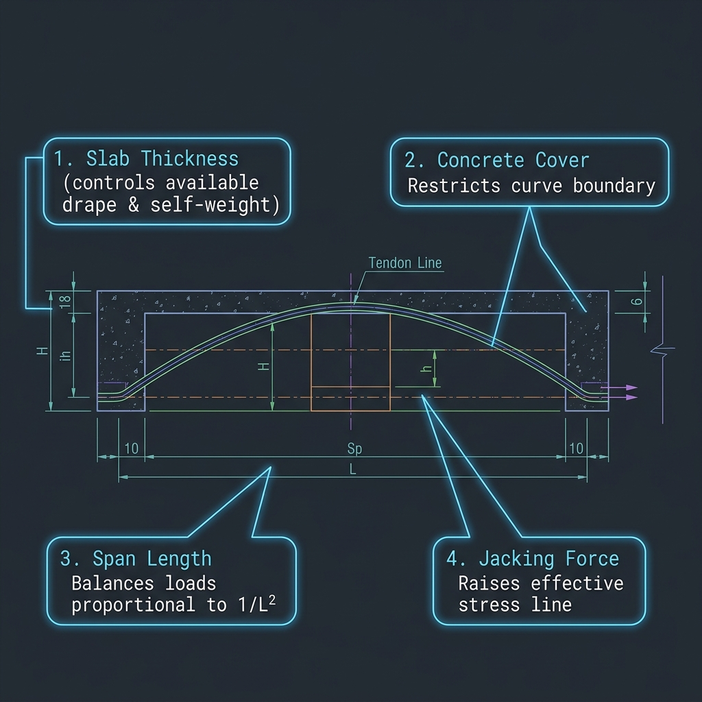

1. Introduction & Overview
Welcome to TendonFlow Documentation. This user guide contains everything you need to build, modify, verify, and export post-tensioned (PT) concrete slabs. TendonFlow computes continuous tendon drapes using double-quadratic parabolas, and solves friction and anchor slip stress profiles along the strand trajectories.

Interactive Designer Workspace
Parameters specified in the sidebar panel are linked directly to our real-time math engine and SVG visualizer. Changes made in the interface are immediately verified against structural cover limits, load balancing ranges, and curvature checks.
2. Slab Geometry Parameters
Slab bounds define the boundaries for concrete self-weight and tendon drape calculations. Adjusting these values scales the design coordinate canvas:
Number of Spans 1 - 3
Sets how many continuous structural spans are modeled longitudinally. To change: Use the "Number of Spans" dropdown. Length controls populate automatically.
Number of Column Rows 1 - 4
Specifies how many transverse column rows are positioned along the design grid in plan layout (e.g. 1 Row in center, or 3 Rows for Left, Mid, Right grid lines). To change: Use the "Number of Column Rows" dropdown.
Measurement Unit cm / mm
Toggles the display and input units for clearances, covers, heights, and anchor sets. To change: Select "Centimeters (cm)" or "Millimeters (mm)" from the "Measurement Unit" dropdown.
Slab Thickness 10 - 60 cm
The total thickness (h) of the concrete slab. Thicker slabs increase self-weight but provide more drape room. To change: Enter thickness value in the thickness input.
Slab Width 2 - 100 m
The design tributary width. Determines the total concrete self-weight to balance. To change: Enter the width value in the width numeric field.
Span Lengths 3 - 25 m
The longitudinal distance of each continuous span (L1, L2, L3). To change: Modify individual Span Length inputs populated under Slab Geometry.
Concrete Density 20 - 26 kN/m³
The unit weight of the concrete, used to calculate the gravity self-weight load ($w = \text{density} \times \text{thickness} \times \text{width}$). To change: Enter value in the "Density" field.
3. Concrete Cover & Clearances
Clearance limits define the concrete cover envelope to satisfy fire resistance ratings and prevent steel corrosion. TendonFlow visually displays these boundaries as red dashed lines.
Live Tendon Drape Sandbox
Adjust the sliders below to see how slab thickness, concrete cover, and duct sizes restrict the available physical tendon drape ($h_{drape} = h_{slab} - d_{c,top} - d_{c,bot} - \phi_{duct}$):
Available Drape Height
Top & Bottom Cover 1.5 - 10 cm
Defines the absolute boundary limits for the tendon path. To change: Enter values in "Top Cover" and "Bottom Cover" numeric fields.
Inflection Ratio (a/L) 0.05 - 0.25
Adjusts where the parabolic path changes inflection from concave-down to concave-up. To change: Slide the "Inflection Point Ratio" bar.
Min Support Angle 0 - 45°
The minimum slope angle required for the tendon centerline as it exits support columns to guarantee proper drape curvature. To change: Enter degrees in "Min Support Angle".
Max Support Angle 0 - 45°
The maximum entry slope angle at columns to avoid excessive friction and anchor stresses. To change: Enter degrees in "Max Support Angle".
4. Tendon & Prestressing Parameters
These coefficients specify the friction losses as strands weave through duct paths. Friction reduces effective prestressing forces along the spans:
X & Y Jacking Force 100 - 5000 kN
The jacking tension (P0) at the anchors. To change: Enter force values in "X Jacking Force" and "Y Jacking Force".
Jacking End Left / Right / Both
Specifies which ends of the continuous tendons are jacked. Jacking both ends reduces overall friction loss peak. To change: Select from the "Jacking End" dropdown.
Anchor Set 0 - 1.5 cm
Slippage distance (draw-in) during anchorage lockoff. To change: Type the value in the "Anchor Set" field.
Curvature Coeff (μ) 0.05 - 0.30
Friction coefficient representing steel sliding inside the duct. To change: Enter value in the "Curvature Coeff (μ)" field.
Wobble Coeff (k) 0.0005 - 0.005
Accidental wobble misalignment factor per meter. To change: Adjust the "Wobble Coeff (k, rad/m)" field.
Tendon X & Y Spacing 0.5 - 5.0 m
The average spacing between adjacent strands in the grid, used for calculating balanced pressure fields. To change: Adjust "X Spacing" and "Y Spacing".
Duct Outer Diameter 1.0 - 15.0 cm
The outer thickness (size) of the post-tensioning duct. Increases in duct diameter reduce the available vertical drape height. To change: Enter the size in "Duct Outer Diameter".
5. Trajectory & Profile Heights Editing
Adjusting the vertical profile drape is straightforward. In the **Elevation Profile** tab, look at the active blue node dots along the tendon curve:
- Support Nodes (High Points): Positioned directly above column lines. Drag up/down to modify support high points.
- Span Nodes (Low Points): Positioned at midspan. Drag up/down to modify low point drape; drag left/right to shift the peak position.
Tendon Profile Heights Sidebar Parameters
You can also edit the profile heights and low-point positions numerically inside the sidebar. The fields are defined as follows:
Support Clearances From Top
Support S0, S1, S2 Clearance: The distance measured from the top face of the slab down to the tendon centerline. Decreasing this value pushes the tendon closer to the top face (increasing the tendon elevation height over support columns).
Mid-Span Low Points From Bottom
Height (Ht): The vertical distance measured from the bottom face of the slab up to the lowest point of the tendon centerline.
Position (Pos x): The horizontal position of the lowest point, measured in meters from the left support of that respective span.
Support Slope Angles Entry / Exit
Shows the slope angle (in degrees) of the tendon path as it enters and exits each column support. These are updated in real-time (e.g. 10.6° or 8.3° | 5.3°) to help verify structural bending checks.
Quick Reset Tip
Double-click any blue node to reset its position back to default limits automatically.
6. Perpendicular (Transverse) Tendons
Perpendicular tendons run in the transverse (Y) direction across the slab, crossing the main longitudinal (X) tendons. They are distributed in groups or bands near column support lines to satisfy punching shear and distribution reinforcement checks.
Number of Tendon Sets 0 - 10
Sets how many unique groups of perpendicular tendons are modeled in the slab. To change: Adjust the number input under "Number of Tendon Sets".
Support Location S0, S1, S2, etc.
The column support index where the set is anchored or located. To change: Select from the "Support" dropdown inside the tendon set card.
Band Direction Left / Right
Specifies whether the tendon group lies on the left side or the right side of the support centerline. To change: Select "Left" or "Right" from the "Direction" dropdown.
Tendon Count 0 - 50
The total number of perpendicular strands in this group. To change: Modify the "Count" numeric input.
Spacing min 5 cm / 50 mm
The center-to-center spacing between consecutive perpendicular tendons in this group. To change: Adjust the "Spacing" field.
Offset min 0
The horizontal clearance distance from the column support line to the first perpendicular tendon. To change: Adjust the "Offset" field.
Elevation Height 0 - Slab Thickness
The vertical elevation (measured from the bottom of the slab to the tendon centerline) where this perpendicular group runs. Used for 3D clash checks. To change: Type the value in the "Height" field.
3D Clash Check & Verification
TendonFlow dynamically compares the vertical height of these perpendicular tendons with the longitudinal tendon profiles. If the duct sizes overlap, a warning is instantly flagged in the "Design Verification & Checks" panel to prevent on-site construction clashes.
7. 2D Plan Layout Parameters
The 2D Plan view is used to lay out the tendon grid in the slab plane. It shows column locations, tendon spacing, and coordinate grids:
Define X-Tendons By Spacing / Positions
Sets how the coordinates of the longitudinal tendons are defined. Uniform Spacing spaces tendons evenly across the width. Custom Y-Positions allows placing them at custom coordinates. To change: Select option from the dropdown.
Tendon Spacing 0.5 - 5.0 m
The uniform spacing between tendons in meters. Only active when "Uniform Spacing" is selected. To change: Adjust the "Tendon Spacing" numeric input.
Y-Positions m, Comma-Sep
A comma-separated list of absolute Y-coordinates (measured from the bottom slab edge) defining custom tendon positions. To change: Type values in the "Y-Positions (m, comma-sep)" input field.
Column Coordinates Auto-populated
Table of coordinates defining where column rows intersect support lines. To change: These update dynamically based on the number of column rows and span lengths.
8. AutoCAD Integration & Commands
TendonFlow allows exporting slab layouts and tendon geometries directly to AutoCAD. Make sure you load the loader file once using APPLOAD inside AutoCAD, then copy or download files and run the commands:
| Command | View | Input Source | Instructions / Shortcut | Action |
|---|---|---|---|---|
| OPEN | Any | DXF File | Opens the generated R12 DXF file directly in AutoCAD. | |
| SCRIPT | Any | SCR Script | Runs the AutoCAD keyboard command macro script. | |
| DRAWELEVC | Elevation | Clipboard (Paste) | Draws the elevation profile using clipboard data. Paste coordinates directly. | |
| DRAWELEVF | Elevation | Data File (.tfd) | Draws the elevation profile by loading a downloaded .tfd file. |
|
| DRAWPLANC | 2D Plan | Clipboard (Paste) | Draws the plan layout using clipboard data. Paste coordinates directly. | |
| DRAWPLANF | 2D Plan | Data File (.tfd) | Draws the plan layout by loading a downloaded .tfd file. |
9. Practical Use Cases & Workflows
Use Case 1: Balancing Upward Load Pressures
Continuous parabolas exert upward balanced force profiles opposing gravity downward loads. To check this:
- Set structural span sizes and slab width.
- Observe the Equivalent Load (kN/m) column in the coordinate table.
- Verify in the **Design Verification & Checks** panel that load balancing meets the green threshold (60% to 80% slab self-weight).
Use Case 2: Clipboard-Based Drawing (Fastest)
Draw tendon designs instantly inside an active AutoCAD session without saving separate data files:
- Download and load
TendonFlowDraw.lspinside AutoCAD once (usingAPPLOAD). - In the TendonFlow export modal, select **TendonFlow Data File (.tfd)** as the format.
- Click **Copy LISP Data** in the modal footer.
- Inside AutoCAD, click the command input bar, press
Ctrl + V, and hit Enter. - Type
DRAWELEVC(for elevation) orDRAWPLANC(for plan layout) and press Enter to draw.